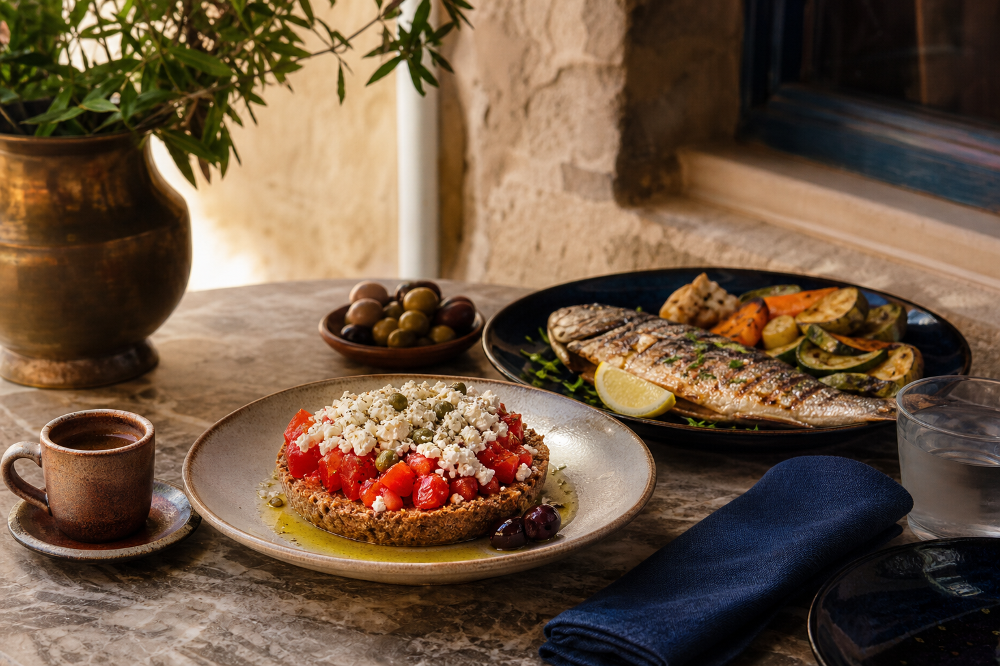

Palace of Knossos
Courts, magazines, staircases and reconstructed architecture across Crete’s best-known Bronze Age complex.
Open the site →
Day 07 Friday, 16 October 2026 · Heraklion
A Minoan morning, one final lunch and the shared journey home.
After Santorini, the itinerary comes back down to earth—roughly four thousand years back.
The farewell
View the full journey again →Leave central Heraklion after breakfast for the short drive to the archaeological site, allowing time for parking and entry.
Follow the Central Court, reconstructed red columns, storage rooms and ceremonial spaces of the Minoan site.
Separate the archaeological record from the labyrinth story, while accepting that the mythical version has considerably better monsters.
Return to central Heraklion for a shared lunch within easy reach of the accommodation and airport route.
Leave central Heraklion with every bag and complete the agreed rental-car return before checking in for the flights.
Goodbye Greece!
Courts, magazines, staircases and reconstructed architecture across Crete’s best-known Bronze Age complex.
Open the site →A palace culture shaped by trade, ritual, storage systems and sophisticated wall painting.
Find the collection →A shared lunch in central Heraklion closes the trip properly before luggage, car return and airport gates take over.
Find Lions Square →Taste of the day
ΗΡΑΚΛΕΙΟ
Make the farewell lunch properly Cretan: dakos with mizithra and olive oil, grilled fish or vegetables, and one final Greek coffee before the airport. Ordering for the table remains the easiest way to discover that everyone wanted the same last bite.
Know before you go
Confirm the return location, fuel policy and registered driver requirements before leaving for Knossos.
Set the shared transfer around the first required check-in time, while allowing for different departure gates and schedules.
Keep the bags at the accommodation during Knossos and lunch, then collect them before the airport transfer.
Location overview
Knossos lies south of central Heraklion; Lions Square brings the group back into town for lunch before the final drive east to the airport.
Open the final route →